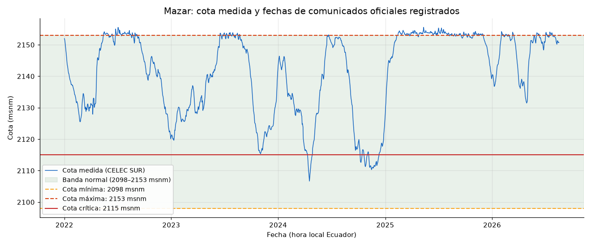
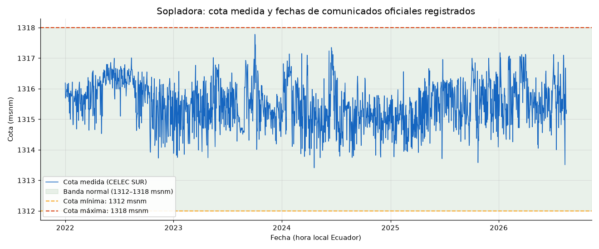
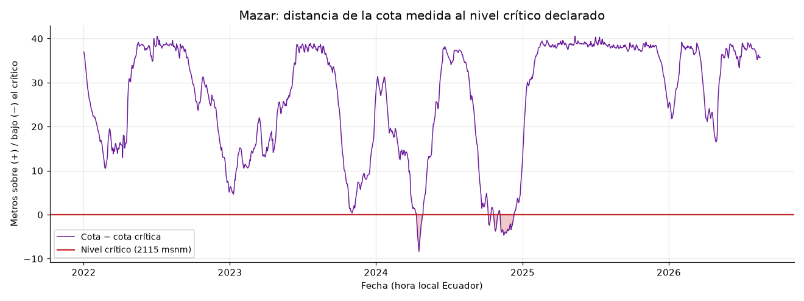
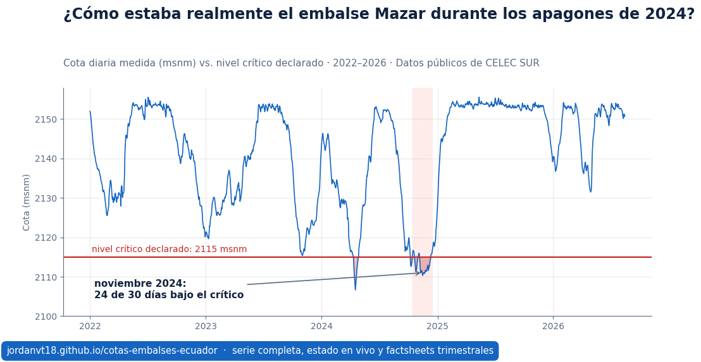
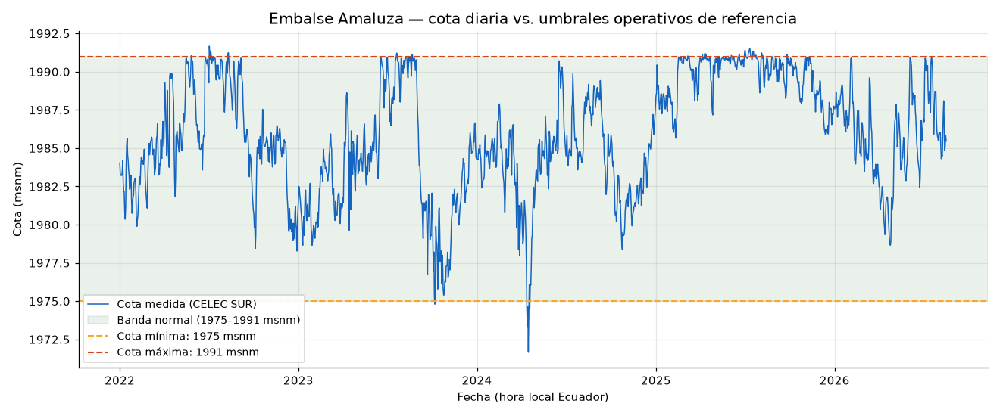

Mazar
2150.75 msnm
lectura del 2026-08-17 (medianoche hora Ecuador)
Dentro de la banda normal de operación
mínima 2098 · máxima 2153 msnm · crítica 2115 msnm (a +35.75 m)
Monitoreo ciudadano, objetivo y reproducible de los embalses Mazar, Amaluza y Sopladora (cascada del río Paute, CELEC SUR) frente a sus umbrales operativos de referencia.
Última actualización: 2026-08-18 07:58 (hora Ecuador) · 4905 mediciones diarias · serie 2022-01-01 → 2026-08-17
Este sitio no afirma que exista desinformación. Superpone en una misma línea de tiempo verificable lo que dicen los sensores oficiales y lo que se comunicó oficialmente; las conclusiones pertenecen al lector.
Fuente primaria: la misma API pública que alimenta el tablero oficial de Gráficas de Producción de CELEC SUR. Método, umbrales y limitaciones completas en el repositorio (README y notebooks CRISP-DM).
Mazar 2150.75 msnm · dentro de banda normal Amaluza 1985.47 msnm · dentro de banda normal Sopladora 1315.30 msnm · dentro de banda normal
Banderas calculadas contra los umbrales declarados (margen de cercanía: 2 m). Versión legible por máquinas: estado.json — consumible por cualquier sistema de monitoreo o bot institucional.
2150.75 msnm
lectura del 2026-08-17 (medianoche hora Ecuador)
Dentro de la banda normal de operación
mínima 2098 · máxima 2153 msnm · crítica 2115 msnm (a +35.75 m)
1985.47 msnm
lectura del 2026-08-17 (medianoche hora Ecuador)
Dentro de la banda normal de operación
mínima 1975 · máxima 1991 msnm
1315.30 msnm
lectura del 2026-08-17 (medianoche hora Ecuador)
Dentro de la banda normal de operación
mínima 1312 · máxima 1318 msnm





| Trimestre | Mazar media / mín / máx | Amaluza media / mín / máx | Sopladora media / mín / máx |
|---|---|---|---|
| 2025-Q2 | 2153.77 / 2152.50 / 2155.56 | 1990.59 / 1987.17 / 1991.21 | 1315.46 / 1313.71 / 1316.96 |
| 2025-Q3 | 2153.45 / 2152.09 / 2155.33 | 1990.43 / 1988.25 / 1991.49 | 1315.50 / 1314.14 / 1316.38 |
| 2025-Q4 | 2151.19 / 2139.20 / 2154.25 | 1988.83 / 1985.91 / 1990.95 | 1315.64 / 1313.58 / 1317.00 |
| 2026-Q1 | 2148.35 / 2136.77 / 2154.19 | 1986.40 / 1982.68 / 1990.89 | 1315.85 / 1314.26 / 1317.18 |
| 2026-Q2 | 2145.45 / 2131.47 / 2153.83 | 1984.30 / 1978.65 / 1990.92 | 1315.50 / 1314.05 / 1317.13 |
| 2026-Q3 | 2152.47 / 2150.17 / 2154.05 | 1987.55 / 1984.31 / 1990.95 | 1315.80 / 1313.51 / 1317.12 |
Resumen descriptivo por trimestre; no incorpora juicios operativos.
Rachas de al menos 3 días consecutivos con la cota por debajo de la mínima, por debajo del nivel crítico (Mazar) o por encima de la máxima declaradas. Generada desde el dato; sin redacción interpretativa.
| Embalse | Condición medida | Inicio | Fin | Días | Cota mínima del episodio |
|---|---|---|---|---|---|
| Mazar | sobre la cota máxima | 2022-05-15 | 2022-06-01 | 17 | 2153.19 |
| Mazar | sobre la cota máxima | 2022-06-11 | 2022-06-14 | 4 | 2153.15 |
| Mazar | sobre la cota máxima | 2022-06-25 | 2022-07-14 | 19 | 2153.15 |
| Mazar | sobre la cota máxima | 2022-07-16 | 2022-08-16 | 31 | 2153.06 |
| Mazar | sobre la cota máxima | 2022-08-21 | 2022-08-23 | 3 | 2153.12 |
| Mazar | sobre la cota máxima | 2022-09-04 | 2022-09-07 | 4 | 2153.04 |
| Mazar | sobre la cota máxima | 2023-06-17 | 2023-06-20 | 4 | 2153.11 |
| Mazar | sobre la cota máxima | 2023-06-25 | 2023-06-27 | 3 | 2153.01 |
| Mazar | sobre la cota máxima | 2023-06-29 | 2023-07-03 | 4 | 2153.35 |
| Mazar | sobre la cota máxima | 2023-07-08 | 2023-07-12 | 5 | 2153.07 |
| Mazar | sobre la cota máxima | 2023-07-18 | 2023-07-25 | 8 | 2153.01 |
| Mazar | sobre la cota máxima | 2023-07-29 | 2023-08-03 | 5 | 2153.10 |
| Mazar | sobre la cota máxima | 2023-08-10 | 2023-08-16 | 7 | 2153.10 |
| Mazar | sobre la cota máxima | 2023-08-21 | 2023-08-23 | 3 | 2153.10 |
| Mazar | bajo el nivel crítico | 2024-04-11 | 2024-04-26 | 16 | 2106.66 |
| Amaluza | bajo la cota mínima | 2024-04-12 | 2024-04-16 | 5 | 1971.65 |
| Mazar | bajo el nivel crítico | 2024-10-08 | 2024-10-13 | 6 | 2112.60 |
| Mazar | bajo el nivel crítico | 2024-10-21 | 2024-10-30 | 10 | 2111.28 |
| Mazar | bajo el nivel crítico | 2024-11-06 | 2024-12-10 | 34 | 2110.31 |
| Mazar | sobre la cota máxima | 2025-02-13 | 2025-03-24 | 39 | 2153.04 |
| Mazar | sobre la cota máxima | 2025-03-27 | 2025-04-21 | 25 | 2153.11 |
| Mazar | sobre la cota máxima | 2025-04-26 | 2025-08-07 | 100 | 2153.08 |
| Amaluza | sobre la cota máxima | 2025-07-01 | 2025-07-03 | 3 | 1991.15 |
| Amaluza | sobre la cota máxima | 2025-07-09 | 2025-07-13 | 5 | 1991.14 |
| Amaluza | sobre la cota máxima | 2025-07-18 | 2025-07-20 | 3 | 1991.06 |
| Amaluza | sobre la cota máxima | 2025-08-04 | 2025-08-06 | 3 | 1991.04 |
| Mazar | sobre la cota máxima | 2025-08-09 | 2025-08-13 | 5 | 2153.01 |
| Mazar | sobre la cota máxima | 2025-08-15 | 2025-08-18 | 4 | 2153.14 |
| Mazar | sobre la cota máxima | 2025-08-25 | 2025-08-27 | 3 | 2153.30 |
| Mazar | sobre la cota máxima | 2025-09-09 | 2025-09-16 | 8 | 2153.08 |
| Mazar | sobre la cota máxima | 2025-09-25 | 2025-09-29 | 5 | 2153.09 |
| Mazar | sobre la cota máxima | 2025-10-02 | 2025-10-06 | 5 | 2153.03 |
| Mazar | sobre la cota máxima | 2025-10-11 | 2025-10-14 | 4 | 2153.26 |
| Mazar | sobre la cota máxima | 2025-10-29 | 2025-11-13 | 15 | 2153.06 |
| Mazar | sobre la cota máxima | 2025-11-15 | 2025-11-17 | 3 | 2153.07 |
| Mazar | sobre la cota máxima | 2025-11-20 | 2025-12-01 | 11 | 2153.10 |
| Mazar | sobre la cota máxima | 2026-02-02 | 2026-02-08 | 7 | 2153.01 |
| Mazar | sobre la cota máxima | 2026-02-17 | 2026-02-20 | 4 | 2153.05 |
| Mazar | sobre la cota máxima | 2026-02-24 | 2026-02-26 | 3 | 2153.09 |
| Mazar | sobre la cota máxima | 2026-03-12 | 2026-03-15 | 4 | 2153.13 |
| Mazar | sobre la cota máxima | 2026-06-02 | 2026-06-10 | 9 | 2153.10 |
| Mazar | sobre la cota máxima | 2026-07-03 | 2026-07-08 | 6 | 2153.09 |
| Mazar | sobre la cota máxima | 2026-07-17 | 2026-07-26 | 10 | 2153.03 |
Composición porcentual del día según el tablero de Información Operativa de CENACE, recolectada diariamente. La caída de la participación hidroeléctrica frente a la térmica es el contexto eléctrico inmediato de unas cotas descendentes.
| Composición del día | |
|---|---|
| Hidroeléctrica | 73.30% |
| Térmica | 26.05% |
| Renovable | 0.51% |
| Importación | 0.13% |
| Exportación | 0.14% |
| Cascada del Paute (valor del tablero) | |
|---|---|
| Mazar | 98 |
| Paute (Molino) | 3835 |
| Sopladora | 2312 |
Transparencia: las magnitudes absolutas del tablero de CENACE no cuadran con la demanda conocida del SNI, por lo que se publica la composición porcentual (invariante ante la unidad); los valores brutos quedan en generacion_cenace.csv tal como los publica la fuente, pendientes de calibración contra informes oficiales. Consulta: 2026-08-18T12:58:22+00:00.
Hechos medidos por trimestre (cota inicio/fin, mínimos, máximos, días fuera de banda y bajo nivel crítico), listos para imprimir o citar:
El registro de comunicados oficiales y su cruce con cotas se mantienen en el repositorio (data/comunicados/ y notebooks 03–04).